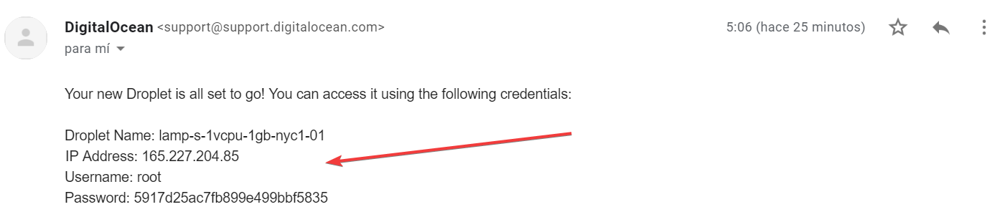
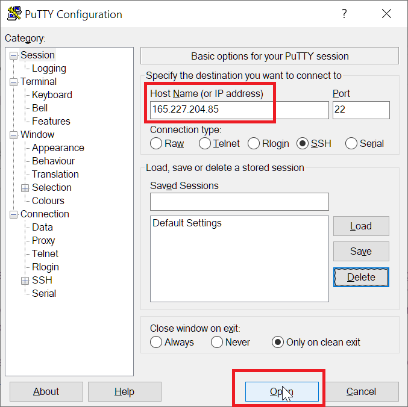
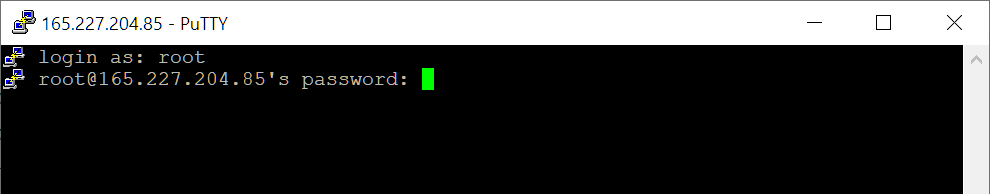
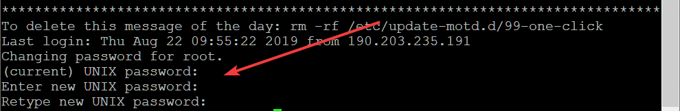
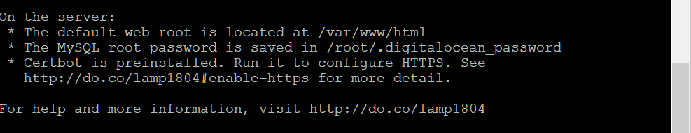
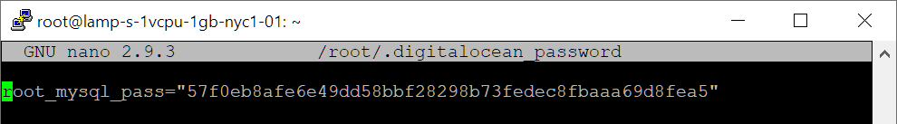
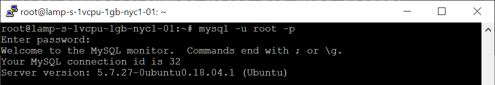
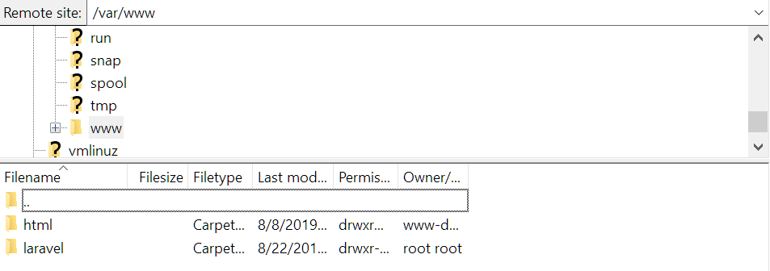
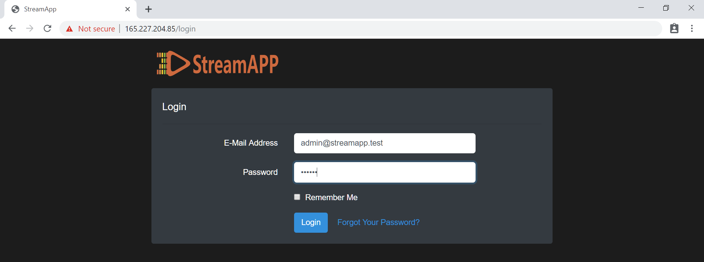
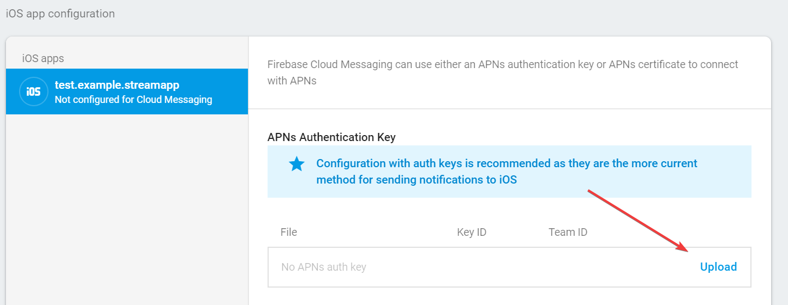

Streamapp
Created: 8/24/2019
By: Jennsen Ramos
Email: jennsenr@gmail.com
Thank you for purchasing my script. If you have any questions that are beyond the scope of this help file, please feel free to email via my user page contact form here. Thanks so much!
VPS with LAMP stack is required, DigitalOcean recommended.
I will use DigitalOcean, to start we must create a new droplet, selecting the LAMP image and choosing the datacenter nearby to our main traffic.
The data will arrive by email. The ip of our VPS and the one that we will use to connect through SSH, in MacOS and Linux can be connected from the terminal, in windows I recommend PUTTY.
we start putty, paste the IP of our VPS and press open.
To log in we must enter the username and password that comes to the email along with the IP. Note: the password field is not visible but you are receiving the data. To paste press right click or CTRL + INSERT
When we start for the first time we are asked to change the password, we must enter the password we use to log in again, then we will be asked for a new password and confirm it.
We will get the mysql password running the command
sudo nano /root/.digitalocean_password
Copy the password somewhere, we close with CTRL + X.
We access the MySQL command line by running mysql -u root -p, we will be asked for the password we copied in the previous step.
we will create a user with the necessary permissions, you can change admin for your user and 123456
for your password
GRANT ALL PRIVILEGES ON *.* TO 'admin'@'localhost' IDENTIFIED BY '123456';
We will also create the database that we will use, you can change streamapp for your brand name.
create database streamapp;
and we go out with exit;
We update the packages before continuing.
sudo apt-get update
sudo apt-get dist-upgrade
Now we need to connect to the SFTP and upload the files, for that we will have to download and start Filezilla, click on file -> site manager -> new site. in protocol select SFTP - SSH file transfer protocol, in host enter the IP of the VPS, write the user and press connect. In the pop-up window enter the password and press ok.
We go to the /var/www directory and drag the laravel folder that we get by unzipping the ZIP of the project. (This folder contains your API Rest Laravel and admin panel Vue.js)
to install the Laravel dependencies we will need to composer, we return to PUTTY and run these commands.
sudo apt-get install php-gd php-xml php7.2-mbstring
curl -sS https://getcomposer.org/installer | php
sudo mv composer.phar /usr/local/bin/composer
We go to the /var/www/laravel directory, and execute the
composer installafter that we assign the necessary permissions to the storage folder.
sudo chown -R www-data: storage
sudo chmod -R 755 storage
To configure the environment variables of our project we must execute:
cp .env.example .envand edit the following variables:
sudo nano .env
APP_NAME = your brand nameCTRL + X to close and press Y to save changes.
DB_DATABASE = the database we created previously
DB_USERNAME = the user we created previously
DB_PASSWORD = the user password
php artisan key:generateAfter that we can run our migrations and seeders.
php artisan migrate --seed
Finally, we can only point the Apache root to the public folder of our Laravel project, to do this modify the virtual host file
sudo nano /etc/apache2/sites-enabled/000-default.confchanging this
DocumentRoot /var/wwwFor this
<Directory /var/www>
DocumentRoot /var/www/laravel/publicThen add the following two lines inside of that same "Directory" tag:
<Directory /var/www/laravel/public>
RewriteEngine On
RewriteBase /var/www/laravel/public
We must enable the Apache mod_rewrite module for the correct operation of the laravel routes:
sudo a2enmod rewriteOnce that's finished and saved we need to restart Apache:
sudo service apache2 restart
For this installation your hosting must allow all the necessary extensions.
PHP >= 7.1.3
BCMath PHP Extension
Ctype PHP Extension
JSON PHP Extension
Mbstring PHP Extension
OpenSSL PHP Extension
PDO PHP Extension
Tokenizer PHP Extension
XML PHP Extension
Apache/Nginx rewrite_module
You need to download and install XAMPP and Composer
https://www.apachefriends.org/en/download.html
https://getcomposer.org/download/
Once this is done, we have to:
1. Open the terminal and go to the Laravel project directory.
2. run composer install
3. Go to the Cpanel and click on MySQL Databases
4. Create a database, create a user, assign the user to the database with all permissions and copy this data somewhere to use later.
5. Go to PhpMyAdmin, select the database you created, open the import tab, select the streamapp.sql file located in the database folder of the Laravel project, click GO.
6. Go to the Laravel project and rename the .env.example file to .env and the public folder to public_html
7. Open the .env file and modify the corresponding environment variables: DB_DATABASE, DB_USERNAME, DB_PASSWORD
8. In the terminal, run the command php artisan key: generate
9. compress all the files of the laravel project into a .zip file
10. Go to the Cpanel and open the File Manager, in the root directory click on upload, select or drag the .zip with the project.
11. At the end of the upload, go back to the File Manager and extract the .zip file
12. Congratulations, you already have the admin panel installed in Cpanel.
Now, we access the VPS address from the browser and we can see the administration panel.
Default access data:
user: admin@streamapp.test
password: 123456
To change account information such as name, email or password, just click on the vertical more icon in the upper right corner, and use the corresponding forms.
Before starting to create movies or series we must add the servers that we will use.
To create a movie or series press the add button, search themoviedb.org for the movie or series and copy the ID, in the form paste the ID and press search. With that matter all the information includes the title, overview, preview, etc. Below you can add all the corresponding videos.
We already use the autoimport with ThemovieDB api, however this is configured with a default API key that has limitations in use. To make sure you use a unique API key, you must register an account at themoviedb.org, go to the settings and in the API tab request your API key and paste it in the administration panel settings.
We go to the firebase console, and
create a our project, enabling Analitycs. This process may take
time... Once created we must add an application.
Android:
To register the app we must fill in the Android package name field with a name that is unique throughout the PlayStore, so it is recommended to use the inverted domain with the name of the app, such as com.example.streamapp, press register appiOs:
Download the google-services.json file and save it somewhere to use it later in our flutter project, press next
In this step we explain how to add the SDK to our android application, this step is omitted because the flutter project already has the flutter SDK integrated, press next.
Press Skip this step.
To register the app we must fill in the iOS bundle ID field with a name that is unique throughout the AppStore, so it is recommended to use the inverted domain with the name of the app, such as com.example.streamapp. press register app.Now to get the FCM server key we go to Project settings, and in the cloud messaging tab we copy the server key token, This we must paste it in the settings of our administration panel.
Download the file GoogleService-Info.plist and save it somewhere to use it later in our flutter project, press next
In this step we are explained how to add the SDK to our iOs application, this step is omitted because the flutter project already has the flutter SDK integrated, press next.
Press Next.
Press Skip this step.
For iOs, An Apple Push Notification Authentication Key is necessary, you can follow the firebase documentation in this case.
is important that the App ID is the same as the one you used when adding the app to firebase in the previous step and the Create the Provisioning Profile step is optional.After downloading your .p8 key and creating your App ID you must go to project settings, to the firebase cloud messaging tab, in the iOS app configuration section you must upload your APN key. 
https://firebase.google.com/docs/cloud-messaging/ios/certs
We go to the AdMob dashboard, and
add our Android and iOs Apps.
Press add app.
select that our app is NOT published.
Write the name of the app and select the platform.
We already have our Ad App ID, now we must create the Ad Units ID, by pressing Next: create ad unit. select in the format we want.
We write a name and press create ad unit.
You need to download and install:
We will also need a keystore to sign our apk, you can see the official documentation, in the Create a keystore section.
https://flutter.dev/docs/deployment/androidIn Windows we open the PowerShell as administrator by pressing Windows + X and selecting Windows PowerShell (admin) and running the command
keytool -genkey -v -keystore c:/key.jks -keyalg RSA -keysize 2048 -validity 10000 -alias keyin MacOS and Linux we run this command in the terminal
keytool -genkey -v -keystore ~/key.jks -keyalg RSA -keysize 2048 -validity 10000 -alias key
We open the project of the app in Android Studio, it is the flutter folder of your download. when starting it does not find the packages and dependencies, for which we have to run the command
flutter packages get
Then to change the name of the package the fastest and easiest option is to use the Android Studio replace, for this
we go to the android/app/src/main directory and open AndroidManifest.xml, select com.example.streamapp and press CTRL + SHIFT + R and replace with the package name we registered in the firebase step.Now to change the name in our android app we must change:
android:label="App Name"to ensure the operation of the app and the ads in the meta-data tag it is necessary to
<meta-datafor Firebase configuration with our Android app
android:name="com.google.android.gms.ads.APPLICATION_ID"
android:value="ADMOB APP ID HERE"/>
the google-services.json file that we obtained when adding the Android app in firebase we paste it in the android/app directoryto sign the apk you need to a new file in the android directory with the name key.properties
storePassword=passwordFor iOS we go to the ios/Runner directory and open the file info.plist
keyPassword=password
keyAlias=key
storeFile=path to key.jks
<key> CFBundleName </key>and modify the value of GADApplicationIdentifier with the admob app id of ios.
<string> App Name </string>
<key> GADApplicationIdentifier </key>for Firebase configuration with our iOs app
<string> ADMOB IOS APP ID HERE </string>
the GoogleService-Info.plist file that we obtained when adding the iOs app in firebase we paste it in the ios/Runner directory
we need to reference the app to the VPS, for this we go to the lib/src/helpers directory and open the api.dart file, we must change the URL to the VPS IP or if you have it, the domain.
static final String url = 'http://IP OR DOMAIN HERE'+'/api/';
For this we will need the PNG application icon with a minimum size of 300x300 and a maximum of 1000x1000. and For the SplashScreen of iOs it is necessary in 3 dimensions with these names
LaunchImage.png: 768 x 1024first
LaunchImage@2x.png: 1536 x 2048
LaunchImage@3x.png: 2304 x 3072
we paste our icon in the assets/icon directoryand the 3 SplashScreen of iOs in the directory
ios/Runner/Assets.xcassets/LaunchImage.imagesetto generate the icons of our app in the different resolutions of both platforms we open the terminal and run the command
flutter packages pub run flutter_launcher_icons:mainThen the easiest way to configure the SplashScreen on Android is
copy the ic_launcher.png icon from the android/app/src/main/res/mipmap-xxxhdpi directory and paste it into the android/app/src/main/res/drawable directory
to compile the production apk of our Android app we just have to run the command
flutter build apk --releaseand we will get our apk in the build/app/outputs/apk/release directory with the name of app-release.apk
To generate the version of iOs it is necessary to have MacOS and Xcode, for more details check
the official flutter documentation:
https://flutter.dev/docs/deployment/ios#create-an-application-record-on-app-store-connect
Once again, thank you so much for purchasing this app. As I said at the beginning, I'd be glad to help
you if you have any questions relating to this theme. No guarantees, but I'll do my best to assist. If
you have a more general question relating to the apps on CodeCanyon, you might consider visiting the
forums and asking your question in the "Item Discussion" section.
Jennsen Ramos.